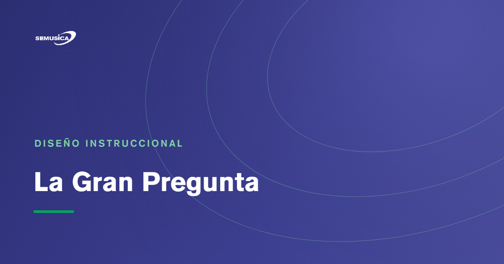

Blog › Diseño instruccional
La Gran Pregunta: el punto de partida de todo aprendizaje profundo
Por Daniel Ravelo Franco — 9 jun 2026

Uno de los errores más frecuentes en educación, capacitación y diseño de experiencias de aprendizaje es asumir que basta con entregar información para que ocurra el aprendizaje. Como si aprender fuera recibir. Como si comprender fuera acumular datos. Como si una persona pudiera apropiarse de un conocimiento solo porque alguien decidió explicárselo.
En este artículo
- La pregunta como condición del aprendizaje
- Enseñar no es responder antes de tiempo
- La profundidad nace de una tensión
- Diseñar aprendizaje es diseñar preguntas
- La virtualización superficial olvida la pregunta
- La pregunta también humaniza la tecnología
- Aprender es entrar en relación
- Volver a la pregunta esencial